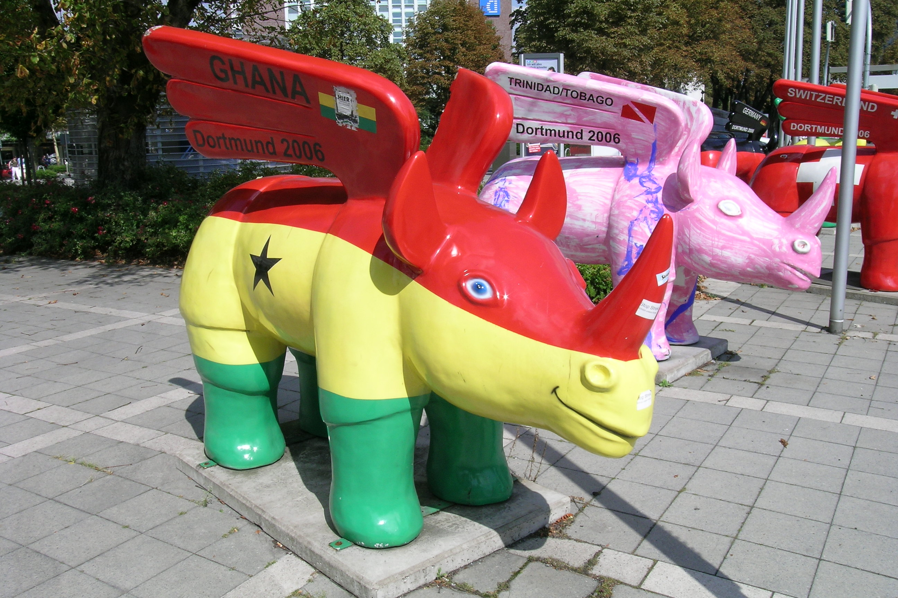
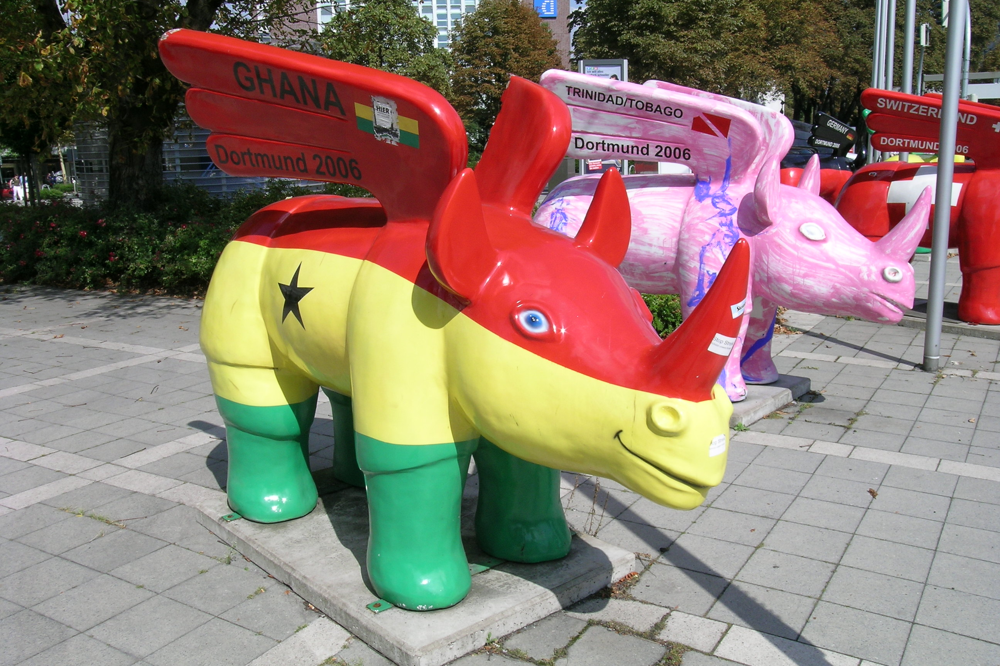
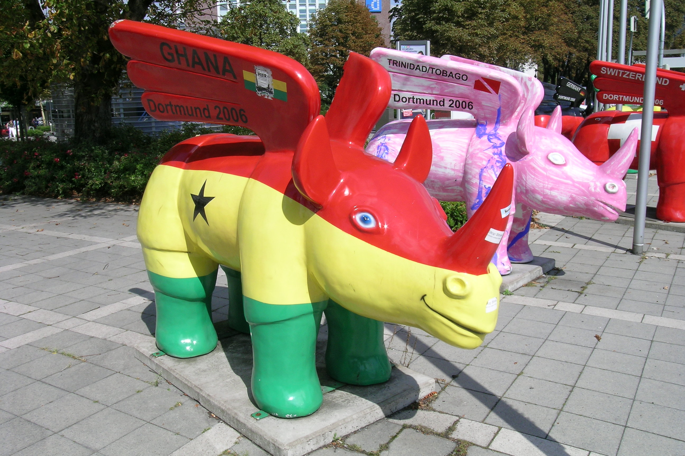

Die Dortmunder Geflügelten Nashörner sind eine faszinierende Kunstinstallation, die in der ganzen Stadt Dortmund zu finden ist. Hier erfährst du alles über diese einzigartigen Skulpturen!
Die Geflügelten Nashörner sind eine Serie von beeindruckenden Skulpturen, die von lokalen Künstlern geschaffen wurden. Sie sind in verschiedenen Teilen der Stadt verteilt und haben eine wichtige kulturelle Bedeutung für Dortmund.
Entdecke die Geflügelten Nashörner überall in Dortmund, es sind so viele, das es sehr spannend ist, selbst herauszufinden wo sie überall zu finden sind!
Du kannst die Geflügelten Nashörner überall in Ruhe bewundern und die einzigartige Kunst und Kreativität der Künstler genießen.
